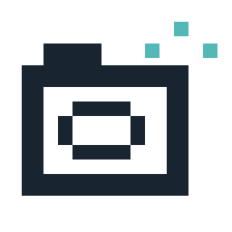
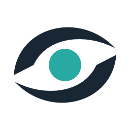

Tracefolio REPORTS & ISSUES
Tracefolio REPORTS & ISSUESPixel Camera 곡선 광학 심볼 로고 교체
검증 대기픽셀 카메라 그림을 곡선과 렌즈 심볼로 교체하고 실제 Affinity 원본·투명 컬러/흰색 PNG를 저장했습니다.
작업 결과
기존 아이콘 경로 2곳에 새 로고를 적용했습니다. 기존 파일과 메타 GUID는 보존했습니다.

변경 전: 계단형 카메라 실루엣.

변경 후: 두 곡선이 렌즈를 감싸며 광학·시선·렌더링을 표현합니다. 이미지는 실제 Affinity 출력이며 Unity 적용 화면 캡처는 아닙니다.
변경 내용
적용 내용
실제 Affinity 3.3.1.4940에서 편집 가능한 곡선 2개와 렌즈 1개로 제작했습니다. Native UI로 PixelCameraOptical.af를 저장했습니다. SDK 파일 저장은 PERMISSION_DENIED라 실제 Affinity NodeRenderingEngine의 RGBA를 변경 없이 전달·PNG 컨테이너로 저장했습니다. 외부 도구로 픽셀 생성·편집하지 않았습니다.
검증
Affinity MCP doctor/status 연결 성공. 256×256 투명 컬러 PNG 4675bytes, 흰색 4348bytes. Native 원본 dirty=false 확인. 256px 형태 검토. 컬러 SHA256 f9739e3ddd84f8c44156032d60c6a1d961fa6113988c1521c7de0bd0c88aa154. 흰색 SHA256 5e9f94ba0a7f36670afcf06d17c4d7eded67f6bc9698c7a582eaad66435f3ea9.
남은 사항
실제 Unity UI 전후 캡처·16/24/32px 가독성 검증·원본 재열기 대조·스토어 패키지 재포장은 미실행입니다. 전 화면은 에셋 파일만 확보했으며 실제 Unity 전후 비교 검증 완료로 처리하지 않습니다. 흰색은 컬러 벡터에서 파생한 내보내기이며 별도 저장 원본은 없습니다. 교훈: 다른 세션 기록 확인 후 현재 환경을 재검증하는 최신 전역 지침에 이미 통합되어 추가 변경 없음.
작업 시간
- 제안 시간: 최초30~50분 제안 후 사용자5분으로 변경
- 실제로 완료된 시간: 2026-11-02 17:17:14 KST 시작. 17:27:28 KST 적용 확인까지10분14초. 연결 복구·실행 허용·저장 전환으로5분 초과. 보고 공개 시간은 별도 확인.
- XERJ: 미사용 — 디자인 작업. 코드 검색 없음; 적용 경로는 기존 파일 경로 확인